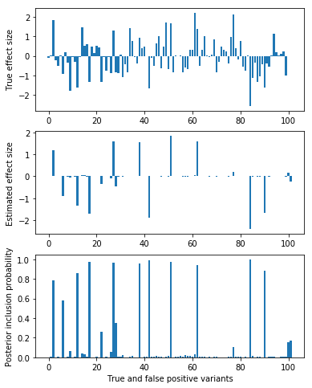

Spike-and-slab regression in tensorflow
Table of Contents
Setup
mkdir -p $SCRATCH/nwas
sbatch --partition=gpu2 --mem=4G --time=1:00:00 --job-name=ipython3 --output=ipython3.out #!/bin/bash source activate nwas rm -f $HOME/.local/share/jupyter/runtime/kernel-aksarkar.json ipython3 kernel --ip=$(hostname -i) -f kernel-aksarkar.json
%matplotlib inline import matplotlib.pyplot as plt import numpy as np import nwas import tensorflow as tf
Simulate some data
p = 1000 n_train = 500 n_validate = 500 pve_y = 0.5 with nwas.simulation.simulation(p, pve_y, [(100, 1)], 0) as s: x_train, y_train = s.sample_gaussian(n=n_train) x_validate, y_validate = s.sample_gaussian(n=n_validate) x_train = x_train.astype('float32') x_validate = x_validate.astype('float32') y_train = y_train.reshape(-1, 1).astype('float32') y_validate = y_validate.reshape(-1, 1).astype('float32')
Fit the model
opt = nwas.sgvb.gaussian_spike_slab(x_train, y_train, verbose=True, num_epochs=2000)
0 -34255.0 -27758.8 5477.04 967.102 51.0381 1.03809 0.0 100 -6651.68 -3599.32 2483.7 526.675 40.9353 1.04505 0.700091 200 -2806.15 -1221.88 1253.17 297.288 32.7439 1.0729 0.696577 300 -2373.25 -1505.0 632.846 208.78 25.5455 1.07799 0.675133 400 -1442.71 -992.964 273.046 156.308 19.2886 1.10713 0.637274 500 -1495.0 -1128.92 239.217 111.646 14.0358 1.17411 0.60659 600 -2217.85 -2061.19 53.2963 92.1549 9.96691 1.23999 0.553866 700 -1296.18 -1172.97 47.6055 66.503 7.79766 1.30285 0.501077 800 -1266.94 -1164.16 43.5988 50.8132 6.95652 1.41365 0.470785 900 -1284.37 -1185.89 44.6987 44.8126 7.46085 1.51574 0.449707 1000 -1172.24 -1060.97 61.6141 40.0548 7.95285 1.6441 0.441132 1100 -1162.9 -1055.97 56.8908 39.5686 8.76752 1.69527 0.446136 1200 -1166.82 -1064.22 53.2428 38.5486 9.06725 1.73905 0.449829 1300 -1158.23 -1059.18 49.9196 38.2382 9.12832 1.76206 0.434564 1400 -1173.11 -1078.16 47.5733 36.2916 9.28149 1.79904 0.434778 1500 -1228.55 -1116.91 65.5 34.8195 9.56611 1.75482 0.426361 1600 -1164.83 -1070.78 47.7836 35.3466 8.97658 1.94306 0.430834 1700 -1192.86 -1094.41 49.5241 37.6729 9.24082 2.00961 0.433955 1800 -1210.13 -1113.72 50.1807 35.2172 9.1263 1.88751 0.425445 1900 -1233.57 -1139.14 47.9664 35.2376 9.31275 1.91333 0.427925
opt[-5:]
[array([-4.01579666], dtype=float32), array([ 0.16181739], dtype=float32), array([-0.98078787], dtype=float32), array([ 0.15607767], dtype=float32), -1188.2214]
plt.clf() q = np.logical_or(s.theta != 0, opt[0].ravel() > 0.1) fig, ax = plt.subplots(3, 1) fig.set_size_inches(6, 8) ax[0].bar(np.arange(np.sum(q)), s.theta[q]) ax[0].set_ylabel('True effect size') ax[1].bar(np.arange(np.sum(q)), opt[1].ravel()[q]) ax[1].set_ylabel('Estimated effect size') ax[2].bar(np.arange(np.sum(q)), opt[0].ravel()[q]) ax[2].set_ylabel('Posterior inclusion probability') ax[2].set_xlabel('True and false positive variants')
<matplotlib.text.Text at 0x7f8b31ff8c18>
